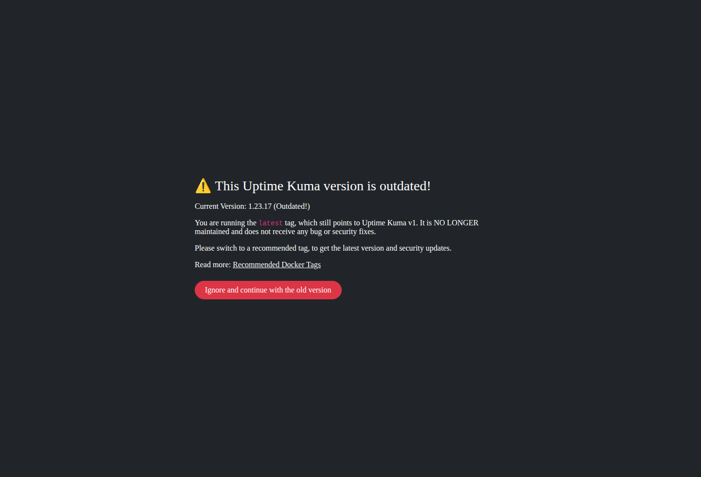
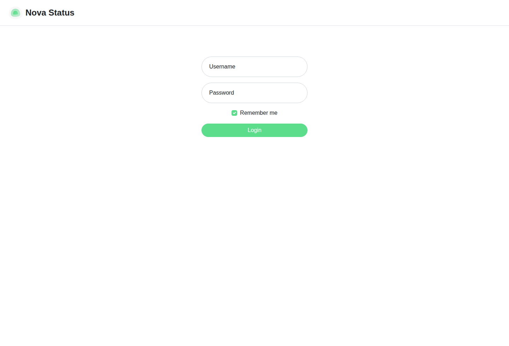
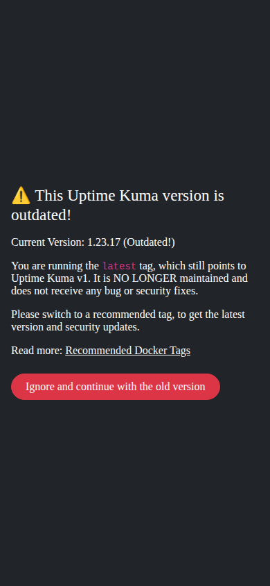
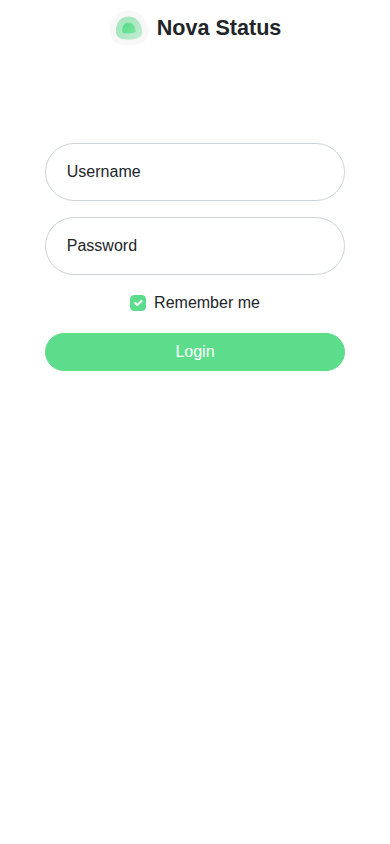

relabeld demo
The same status page before and after one relabeld run, verified in headless Chromium. The before pair is the unpatched upstream deployment; the after pair is the same app rebuilt from patched source with the demo brand. The gate then checks the live page: no old-brand strings, the new name in the title, no console errors, no horizontal overflow at either viewport.
Captured at the two gate viewports, before and after the rebrand. Before is the upstream deployment (Uptime Kuma setup notice); after is the patched deployment's login page. Screenshot capture is relabeld verify; nothing here is hand-cropped. The demo palette goes to the status-page accent config, not the login theme, so the upstream green button is intentionally unchanged.




relabeld verify runs seven checks over the live page and exits non-zero if any fails. The table is the contract, not a summary of intent.
| Check | Status | What it proves |
|---|---|---|
| brand-strings | pass | Zero visible occurrences of the upstream brand variants in the rendered DOM text or page HTML; preserved license/copyright lines are excluded. |
| brand-title | pass | The new brand name appears in <title>. |
| console-errors | pass | No page errors and no console messages of type error. |
| overflow-desktop | pass | scrollWidth - innerWidth = 0 at 1440 × 980. |
| overflow-mobile | pass | Same assertion at 390 × 844. |
| screenshots | pass | Desktop and mobile screenshots written to the configured output directory. |
| favicon | pass | Favicon responds 200 and its sha256 matches the brand asset. |
Evidence on disk. The raw result is demo/reports/verify.json; the self-contained HTML report is demo/reports/report.html. Both are generated by the commands below, in the same run that produced the after screenshots.
Run from the repository root after npm ci && npm run build.
# 1. detect brand surfaces (read-only)
node dist/cli.js scan ./app --json > scan.json
# 2. write the brand spec
node dist/cli.js init ./app --name "Nova Status" --domain status.example.com
# 3. inspect the plan, then patch strings, assets and the compose override
node dist/cli.js apply ./app --brand ./app/brand.yaml --dry-run
node dist/cli.js apply ./app --brand ./app/brand.yaml
# 4. prove the served page at both viewports
node dist/cli.js verify --url <app-url> --brand ./app/brand.yaml --json --out verify.json
# 5. render the proof as one self-contained HTML file
node dist/cli.js report --input verify.json --out report.htmlEverything in this page is a file in the repository; nothing is fetched from the network.